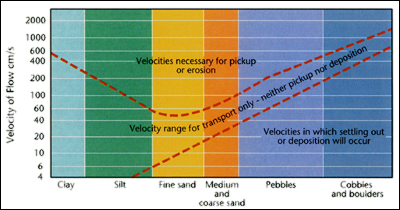

Types of Runoff
There are many routes water can take after precipitation occurs.
Precipitation can:
- Evaporate: From vegetation, rocks and soil
- Stay on surface: In puddles
- Run off: Over land into streams
- Infiltrate: The soil and join the groundwater flow.
Rivers
Rivers are of special importance because they produce so many services to
humans and the environment. Although they are a relatively small link in the
hydrologic cycle (Groundwater is more significant,) rivers are keys to
settlement patterns.
We se rivers not just for drinking water and transportation, but also for
depositing our waste and generating electricity.
Watershed: The area that drains (i.e. supplies water to a stream)
Drainage Basin: Several watersheds join to form a drainage basing of a
river
Drainage Patterns: Water flows and shapes the surface in unique
patters, each pattern depends on geology
Transportation of Material in River Systems.
Rivers are important in erosion because they can transport large volumes of
material that has weathered.
The amount of erosion that can occur depends on the rivers velocity, discharge
rate and underlying geology.
- Velocity: Rivers that flow quickly can transport larger amounts of
material

Figure 29.4 Velocities needed to Erode - (Pg. 214, Earth
Dynamics, Chasmer)
- Discharge Rage: Rivers of higher volume can erode greater amount
than small, quickly flowing streams.
- Underlying Geology: Hard rocks erode slowly, unconsolidated
material or weak rocks erode quickly.
Transport Methods
- Solution: Chemical Weathering of minerals. Dissolved minerals an
only be removed when the water evaporates (saturation is reached)
- Suspension: Refers to particles being held up in the water due to
currents in the water. The greater the energy in a river, the greater the
size that can be suspended. Slow rivers transport only silt.
- Saltation: Larger Particles, including pebbles and boulders, depending
on the energy in the river, will bounce along the river bottom
|